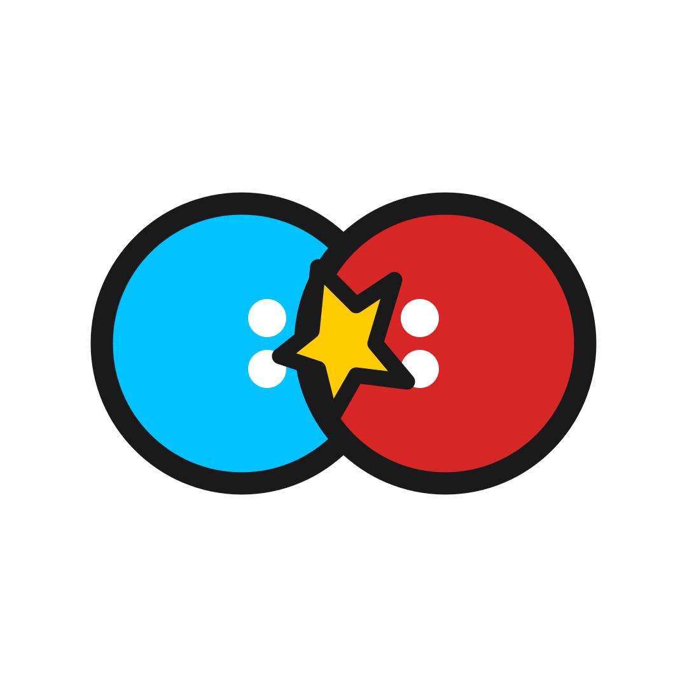
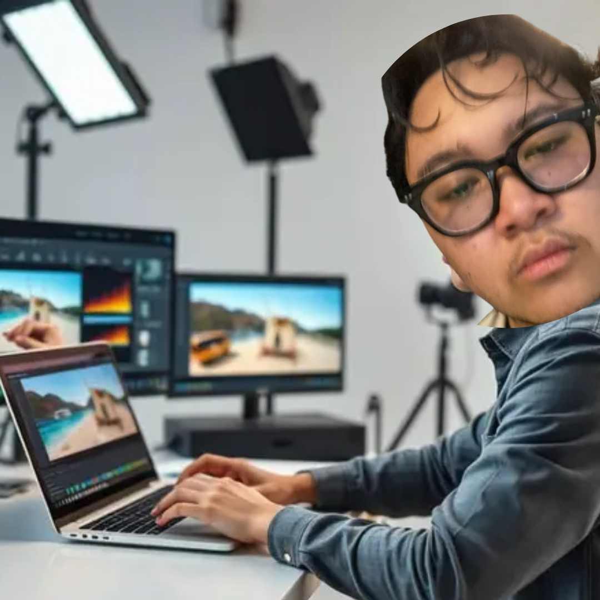

Informatics Student
I make browser games, useful web tools, and stories with grit.
Saya Farrel Krisna. Saya suka membuat proyek yang bisa langsung dicoba: game web, prototype image matching, dan dunia cerita yang terasa nyata.
I work where code, visuals, and story overlap.
D4Mahasiswa Informatika
3+Bidang kreatif utama
PlanStory & worldbuilding
BBABrowser battle game
Coder
Membangun website, game browser, UI interaktif, sistem kecil, dan eksperimen JavaScript yang bisa langsung dimainkan atau dipakai.
Writer
Merencanakan karakter, konflik, arc panjang, dan struktur cerita seperti SEAVerse, Batavia, dan Ordinary People dengan rasa sinematik.
Visual Maker
Memikirkan mood, warna, layout, poster, logo, editing, dan cara sebuah project terasa punya identitas visual.
Skill Map
Three things I keep mixing.
Code gives the project structure. Visual direction gives it mood. Writing gives it a reason to exist.
Frontend & Interaction
- HTML, CSS, JavaScript
- Responsive layout
- Game logic & UI states
Interface Direction
- Liquid glass aesthetic
- Dashboard, hero, nav, cards
- Visual hierarchy
Prototype Thinking
- Image similarity concept
- Automation workflow
- Tool-based problem solving
Selected Work
Game
Prototype
Web UI
Story Plan
Story Plan
Story Plan
Brand
Projects with proof, not just claims.
Ball Battle Arena
Game simulasi battle berbasis web dengan karakter berbentuk bola, arena, balancing, recap, cinematic camera, dan update iteratif.

Buka Ball Battle ArenaImage Harvester
Prototype visual-search/image-matching untuk mengumpulkan kandidat gambar, menampilkan hasil di GUI, dan membantu membandingkan kecocokan visual secara cepat.
Portfolio Landing Page
Website personal dengan visual gelap, glass yang lebih terkendali, struktur project jelas, dan copy yang lebih dekat dengan suara saya sendiri.
SEAVerse
Original superhero world about SEA, E-17 anomalies, The Order, covert teams, and the cost of controlling power before it breaks civilization.
Batavia
Concept story built around place, atmosphere, conflict, and the feeling of a city hiding older wounds under everyday life.

Ordinary People
Grounded character drama about ordinary people carrying private damage, ambition, shame, and small choices that quietly change them.
KurShop
Konsep logo dan identitas aplikasi warung online modern dengan vibe digital, Gen Z, dan warna khas.
Stories & Worlds
Writing that feels like a shelf of files.
SEAVerse
Superhuman geopolitics, secret organizations, public heroes, covert sins, and people trying to survive systems bigger than them.
“The Director did not believe in heroes. He believed in systems, because systems could survive what men could not.”
Director
A political-superhuman opening about Erik Goebbel, SEA, and the price of building order before the world admits it needs one.
Classified files, restrained narration, and a main character whose calm feels more dangerous than anger.
Ordinary People
A grounded story about normal-looking people carrying damage, ambition, shame, and choices they cannot fully explain.
Small rooms, heavy silences, and characters who reveal themselves through what they refuse to say.
Batavia
A story shaped by place: old city texture, hidden conflict, memory, and the feeling that the setting has its own secrets.
Not just a location — a pressure cooker for history, fear, and people pretending nothing is wrong.
Timeline
Dari tugas, game, sampai rencana cerita.
Fondasi belajar
Belajar, menulis, menonton, dan mulai membangun selera visual/naratif dari sekolah sampai SMA.
Informatics era
Masuk fase kuliah informatika dan mulai mengubah ide menjadi website, game, dan prototype digital.
Mahasiswa
Menggabungkan coding, film, writing, desain, dan eksperimen AI/computer vision menjadi identitas kreatif.
Interactive Music
Piringan yang bisa dipilih.
Pilih lagu bawaan, upload file lokal, tempel URL audio langsung, atau masukkan link YouTube. Untuk YouTube, cover piringan otomatis memakai thumbnail video.
Let Down
0:000:00
Volume
Contact
Let’s build something strange yet polished.
Untuk kolaborasi website, prototype, game browser, logo, portfolio, naskah, atau project kreatif lain.
Positioning
Creative Technologist — bukan cuma coder, bukan cuma penulis. Saya membangun project dengan rasa cerita, visual, interaksi, dan iterasi.
Kirim Email